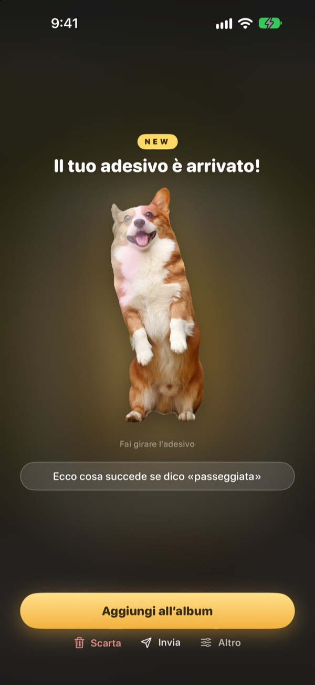
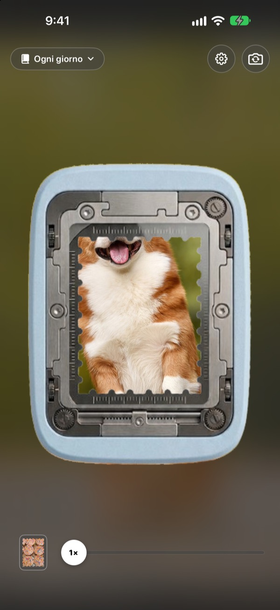
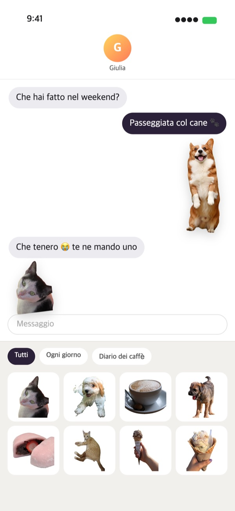
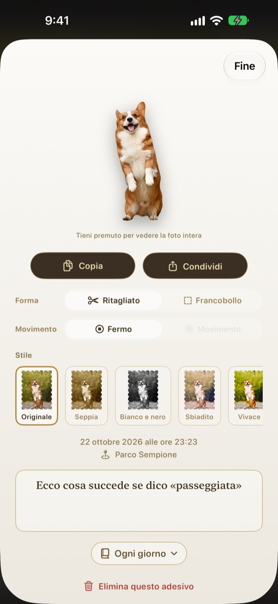
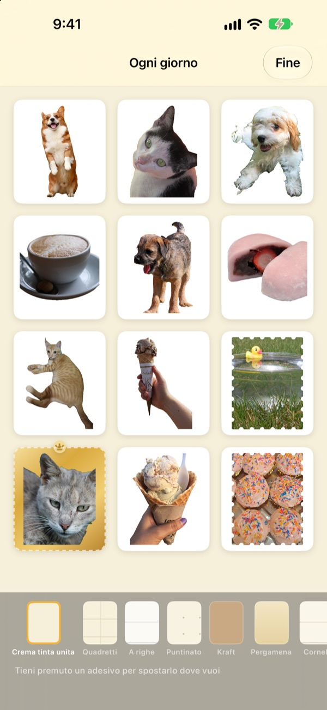

Tieni premuto,
l’attimo diventa un adesivo
Inquadra la scena nella finestra della fustella, tieni premuto e rilascia. Il tuo cane viene ritagliato seguendo la sua sagoma, insieme al breve movimento di prima e dopo la pressione. Poi lo mandi subito da Messaggi o dalla tastiera.
Tutte le funzioni sono gratuite. Adesivi e foto restano sul tuo dispositivo.

Prova a staccarne uno
Scegli una scena, tieni premuto il pulsante della fustella e rilascia. Poi prova a cambiare forma e stile.
I momenti più teneri si addormentano nella galleria
Fotografi il tuo cane con la lingua di fuori. Per mandarlo come adesivo devi cercare la foto, ritagliarla e aprire un’altra app di adesivi. Nel frattempo la chat è già passata ad altro. Punching stacca l’adesivo proprio mentre scatti, e appena lo metti in un album è già nel cassetto adesivi di Messaggi.
Il soggetto ritagliato, il paesaggio in francobollo
Se c’è qualcosa da ritagliare, come una persona, un animale o un oggetto, ottieni solo quello. Se non c’è, come in un paesaggio, si stacca un francobollo dal bordo dentellato.
Insieme all’adesivo arriva anche il breve movimento di prima e dopo la pressione, così si muove.

Subito in Messaggi e nella tastiera
Gli adesivi staccati compaiono nel cassetto adesivi di Messaggi. Attiva la tastiera di Punching e potrai sceglierli e incollarli anche nelle altre app.
Gli adesivi animati arrivano in movimento. Tieni premuto un adesivo per copiarlo e incollalo dove vuoi.

Forma e stile, anche dopo
Passa quando vuoi dal ritagliato al francobollo, dal movimento all’immagine ferma. La foto originale resta intatta, quindi l’adesivo rimane nitido come la prima volta, per quante volte tu lo cambi.
Scegli uno stile tra Originale, Seppia, Bianco e nero, Sbiadito, Vivace e Ciano, e aggiungi due parole, la data e il luogo.

Raccogli in album, stampa su carta
Crea un album per ogni tema e anche in Messaggi e nella tastiera sceglierai album per album. Scegli pagine kraft, a quadretti, a righe o pergamena e disponi gli adesivi nell’ordine che preferisci.
Trasforma un album in un PDF da stampare con linee di taglio a forma di francobollo e stampalo direttamente su carta adesiva.

Si comincia in tre passi
- 1
Inquadra
Metti ciò che vuoi nella finestra al centro della fotocamera.
- 2
Tieni premuto e rilascia
L’adesivo si stacca nel momento in cui rilasci.
- 3
Conserva e invia
Aggiungilo a un album ed è subito pronto in Messaggi e nella tastiera.
Dove usarlo, dove cambiarlo
- Messaggi
- ＋ accanto al campo di testo ▸ Adesivi ▸ Punching Adesivi
- Altre app
- Attiva la tastiera di Punching, passaci con il tasto globo, poi scegli e incolla
- Ovunque
- Tieni premuto un adesivo per copiarlo, poi incollalo
- Adesivi di carta
- ⋯ in un album ▸ Uso ▸ Foglio di adesivi da stampare (PDF)
- Pagine e ordine
- ⋯ in un album ▸ Decora a piacere
- Foto di prima
- Importa da Foto, dentro un album
- Forma iniziale
- Impostazioni ▸ Stacco ▸ Forma predefinita
- Vedere il movimento
- Impostazioni ▸ Visualizzazione ▸ Riproduci il movimento in automatico
- Apertura rapida
- Apri la fotocamera di Punching da Comandi Rapidi o da Centro di Controllo
Le impostazioni sono sotto l’ingranaggio in alto a destra della fotocamera.
Domande frequenti
Il mio adesivo non si muove.
In alto a destra nella fotocamera, apri Impostazioni ▸ Visualizzazione e controlla che Riproduci il movimento in automatico sia attivo. Poi tocca l’adesivo e verifica che sotto Forma l’opzione Movimento sia attiva. Il movimento viene sempre registrato, quindi puoi attivarlo quando vuoi. Le foto importate dall’app Foto sono un’immagine singola e non si muovono.
Ottengo un francobollo invece di un ritaglio.
Le scene senza un soggetto da ritagliare, come un paesaggio, vengono staccate automaticamente a forma di francobollo. Tocca l’adesivo per cambiarla da Forma quando vuoi. Se preferisci il francobollo fin dall’inizio, modifica Impostazioni ▸ Stacco ▸ Forma predefinita.
Non vedo gli adesivi in Messaggi.
In Messaggi, tocca il pulsante ＋ accanto al campo di testo ▸ Adesivi e cerca Punching Adesivi. Compare dopo che hai staccato almeno un adesivo in Punching e, se hai più di un album, puoi sfogliarli album per album. Trovi i passaggi dettagliati in Impostazioni ▸ Uso ▸ Usa in Messaggi e nella tastiera.
Come attivo la tastiera?
In Impostazioni ▸ Uso ▸ Usa in Messaggi e nella tastiera, tocca Apri Impostazioni e attiva Tastiere ▸ Punching Adesivi. Per incollare gli adesivi serve «Consenti accesso completo», ma la tastiera non legge né invia mai ciò che scrivi e non si collega mai a internet. Poi, in qualsiasi app, tocca il tasto globo per passare a Punching Adesivi.
Posso stampare adesivi veri?
Tocca ⋯ in alto a destra in un album ▸ Uso ▸ Foglio di adesivi da stampare (PDF). Ottieni un PDF a 300 dpi dell’intero album con linee di taglio a forma di francobollo, pronto per la carta adesiva della stampante di casa o per la tipografia. La Guida alla stampa, nello stesso menu, ti accompagna passo dopo passo.
Dove sono finite le mie vecchie raccolte?
Dalla versione 1.0.1 gli adesivi si raggruppano in un solo modo: gli album. Ogni raccolta è diventata un album con lo stesso nome, con adesivi, pagine e ordine invariati.
Nella barra di stato compare una luce verde.
È l’indicatore di utilizzo della fotocamera di iOS. Si accende solo mentre la schermata della fotocamera è aperta. Quando apri un album la fotocamera si ferma e la luce si spegne.
Cosa succede se elimino un adesivo?
L’adesivo, la foto originale e i dati di movimento vengono eliminati per sempre dal dispositivo e spariscono anche dal cassetto adesivi di Messaggi. Non si possono recuperare, quindi pensaci bene prima di eliminarlo.
Dove vengono salvati foto e adesivi?
Solo sul tuo dispositivo. Niente account, niente server nostri, niente pubblicità. Dal dispositivo escono soltanto statistiche d’uso anonime, segnalazioni di errore e i feedback che decidi di inviare. Tutti i dettagli sono nell’informativa sulla privacy.
È davvero gratis?
Sì, tutte le funzioni sono gratuite. Se l’app ti piace puoi lasciare una mancia allo sviluppatore dall’app, ma la mancia non sblocca nulla.
Domande o suggerimenti? Scrivi a leeo@kakao.com. Di solito rispondiamo entro 2-3 giorni. Segnalazioni di bug e proposte di nuove funzioni sono benvenute anche su GitHub (M1zz/StampCamera).